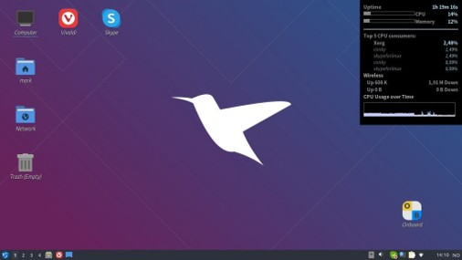

Thinkpad X40 with Antix
Breathe new life into this old laptop by updating the SSD and installing a lightweight Linux distribution. This guide walks through installing Antix on the Thinkpad X40.
ThinkPad X61s: Update BIOS to Improve Performance
Double the hard drive performance by updating the BIOS on this reliable and compact ThinkPad.

Samsung 305U: Small Laptop with Lightweight Lubuntu
Update the wireless drivers and install Lubuntu on this neat little laptop for a fast and responsive experience.

Tanix TX6: install Armbian
How to install Armbian on this little set top box, replacing the original Android with Alice UX.